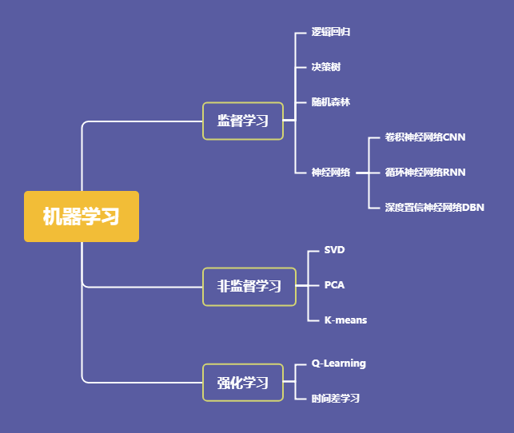
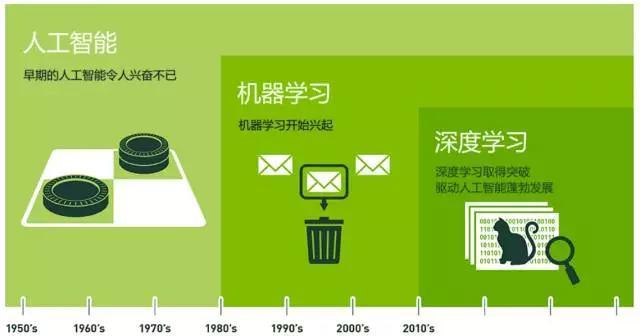
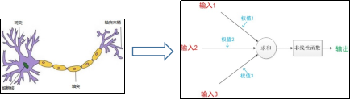
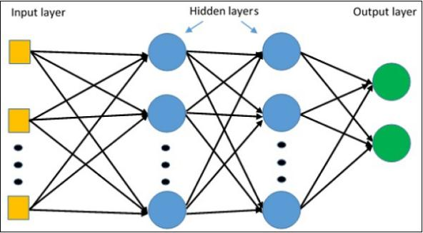

任务二 人工智能技术支撑：算法
【任务描述】
做饭机器人一直是人类的追求之一，如何让机器人掌握不同菜系的烹饪方法就是我们的算法。我们通过量化各个步骤、分析各种情况给出不同反应，指导机器人学习人类的烹饪过程是复杂的算法设计过程。
【任务实施】
2.1什么是算法：
算法就是解决某个问题的计算方法及步骤。计算机的算法则是让计算机按照何种方法进行判断，计算。
2.2什么是机器学习：
机器学习（Machine Learning，ML）是研究怎样让计算机具备像人类一样的学习能力，是人工智能的核心部分。人类的学习是一个人根据过往的经验，对一类问题形成某种认识或总结出一定的规律，然后利用这些知识来对新的问题下判断的过程。因此，机器学习是指用某些算法指导计算机利用已知数据学习得出适当的模型，并应用此模型对新的情况给出判断。
机器学习根据学习方式的不同可以分为三类：监督学习，无监督学习，强化学习。监督学习与其他两类学习的不同之处就是输入的训练样本带有正确输出的标记，其他两类的样本没有，强化学习是计算机与环境的交互过程中以追求更高的性能为标准不断优化算法模型。
- 监督学习：又称有导师的学习，输入的训练样本带有输出标记，计算机不断调整模型使其输出与样本标记一致。
- 无监督学习：输入的训练样本没有标记，计算机需要从样本中抽取出通用的规则。
- 强化学习：计算机在与环境的交互过程中，通过统计环境的反馈，动态规划模型来达到最优性能的一类学习方法。
如下列出了常见的机器学习算法（按照学习方式的分类）：

2.3什么是深度学习：
深度学习（Deep Learning,DL）是机器学习的一个子集，通过模仿人类大脑的生物学和过程，学习样本数据的内在规律和表示层次，最终让机器能够像人一样具有分析学习能力，能够识别文字、图像和声音等数据。

人脑中负责活动的基本单元是“神经元”，它以细胞体为主体，由许多向周围延伸的不规则树枝状纤维构成的神经细胞。人脑中含有上百亿个神经元，而这些神经元互相连接成一个更庞大的结构，就称为“神经网络”。深度学习试图模仿人脑的“神经网络”建立一个类似的学习策略，也取名为“神经网络”。
2.4什么是神经网络：
计算机范畴的神经网络，即人工神经网络（Artificial Neural Networks，ANNs），是模拟生物神经系统建立的计算机模型。

由图3可以看到人脑的基本单元——神经元的组成和联接，我们模仿人类神经元设计的神经元模型是一个包含输入，输出与计算功能的模型。输入可以类比为神经元的树突，而输出可以类比为神经元的轴突，计算则可以类比为细胞核。

神经网络是由层构成的，一般包括输入层，输出层，隐含层。每层之间的数学关系是：，其中x是输入向量，y是输出向量，α( )是激活函数，b是偏移向量，W是权值矩阵，每一层将输入x通过如上公式得到输出y。
神经网络的学习过程：把训练集中的每个输入加到神经网络中，神经网络根据预测值与目标值之间的误差不断调整网络各层的权值矩阵（W）与b，使神经网络的预测值与目标值一致，待各层权值都收敛到一定值，学习过程结束。然后我们就可以用生成的神经网络来对未知数据进行判断。
激活函数：激活函数给神经元引入了非线性因素，使得神经网络可以任意逼近任何非线性函数，常见的激活函数有：Softmax，Sigmoid，Tanh，ReLU。
权值：每个神经元之间的连线对应一个权值，需要通过训练得到。
- 损失函数：用来衡量预测值与目标值的差异。
常见神经网络架构有：卷积神经网络(ConvolutionalNeuralNetworks,CNN)、循环神经网络(RecurrentNeuralNetwork,RNN)、长短时记忆神经网络(Long/ShortTermMemoryNetwork, LSTM)、深度信念神经网络(DeepBeliefNetwork,DBN)等。一些经典的神经网络模型：LeNet5、Alex、VGG、YOLO、ResNet等等。
在神经网络训练的中，有三个重要的概念Epoch、Batch Size和迭代：
- Epoch：当一个完整的数据集通过了神经网络一次并且返回了一次，这个过程称为一个 epoch。
- Batch Size：当一次输入一个数据集对于计算机而言太庞大的时候，就需要把它分成多个小块。也就是将数据集分成几个batch。Batch Size则是一个 batch 中的样本总数。
- 迭代：是batch 需要完成一个epoch 的次数。
TensorFlow是目前流行的神经网络算法库，被广泛用于各类机器学习算法的编程实现。Tensorflow playground展示了数据是如何“流动”的。能让你在浏览器中运行真实的神经网络，并且可以点击按钮和调整参数，了解神经网络是怎么工作的。体验地址：tensorflow.org.
【任务拓展】
跟同学们介绍一下你所了解的计算机经典算法。